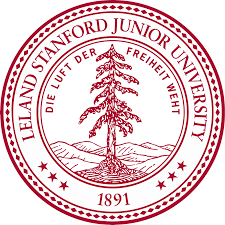

Welcome to my personal web page! I am an incoming Ph.D. student at Stanford Computer Science, and will have great fortune to work with Professor James Zou. Previously, I was a research engineer at Tsinghua University advised by Jinbo Xu. I obtained my Master's degree at Columbia University, advised by Dragomir Radev. It is a profound loss for me to lose Prof. Dragomir on March 29, 2023 (in memoriam). My research focuses on deep learning algorithms for scientific problems — in particular, 3D geometric networks, generative AI, domain adaptation, and other applications in chemistry and structural biology.
Email: [fangwu97@stanford.edu]
Address: Haidian District, Beijing, China
Last update time: 2024.06.01
 [2024/03] One paper is accepted by ICML 2024 and another paper is accepted by IJCAI 2024.
[2024/03] One paper is accepted by ICML 2024 and another paper is accepted by IJCAI 2024.
 [2024/01] One paper is accepted by ICLR 2024.
[2024/01] One paper is accepted by ICLR 2024.
 [2023/10] One paper is accepted by Nature Communications.
[2023/10] One paper is accepted by Nature Communications.
 [2023/09] One paper is accepted by NeurIPS 2023.
[2023/09] One paper is accepted by NeurIPS 2023.
 [2023/06] One paper is accepted by Communications Biology.
[2023/06] One paper is accepted by Communications Biology.
 [2023/04] Two papers are accepted by ICML 2023.
[2023/04] Two papers are accepted by ICML 2023.
 [2023/02] One work on molecular domain adaptation is accepted by Cell Patterns.
[2023/02] One work on molecular domain adaptation is accepted by Cell Patterns.
 [2023/01] A talk on M2D2 invited by MILA and Valence.
[2023/01] A talk on M2D2 invited by MILA and Valence.
 [2022/12] Two papers are accepted by AAAI 2023.
[2022/12] Two papers are accepted by AAAI 2023.
 [2022/10] One work on 3D pretraining is accepted by Advanced Science.
[2022/10] One work on 3D pretraining is accepted by Advanced Science.
* represents equal contribution and co-first authorship.

Stanford University, 2024-now
• Ph.D. in Computer Science
 Columbia University, 2019-2021
Columbia University, 2019-2021
• Master of Science
• GPA: 3.51/4.0
Central University of Economics and Finance, 2015-2019
• Bachelor of Science
• GPA: 3.85/4.0
Before joining Tsinghua University, I feel fortunate to be a research assistant advised by Stan Z. Li at Westlake University, and recieved guidance as a visiting student from Huajun Chen, Xiang Bai and Danny Lan.
 Research Engineer (2022.08-2023.05)
Research Engineer (2022.08-2023.05)
• Tsinghua University
• Advised by Jinbo Xu
My study cannot be possible without the support from my awesome friends, mentors, and collaborators! Check out some of them: